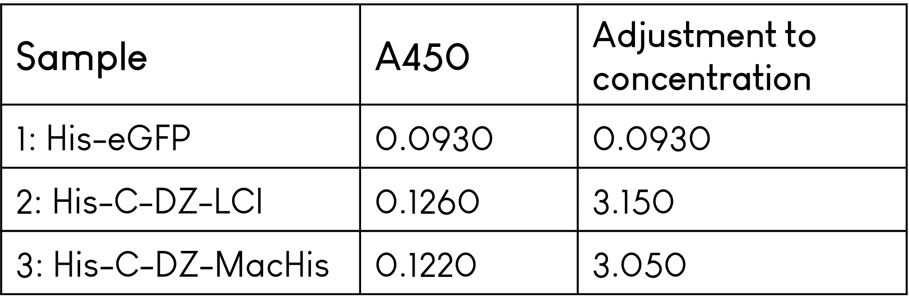
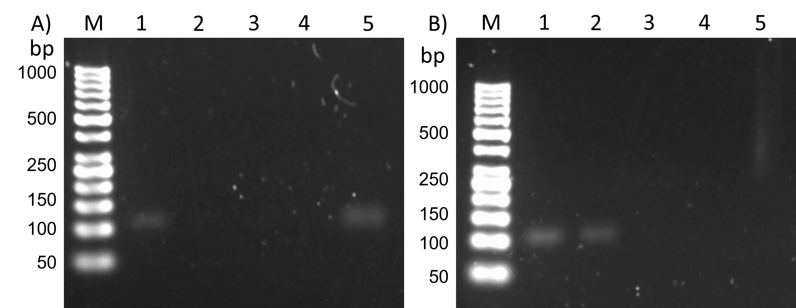

Overview
We spent most of the competition time in the laboratory, more precisely about five months. Despite some setbacks, we were able to move step by step towards our goal of storing information in DNA. Our intermediate and final results are documented on this page. Detailed SOPs (standard operating procedures) can be found here.
TdT Tailing Reaction
As the Terminal Deoxynucleotidyl Transferase (TdT) is the foundation of our project, characterization of the enzyme was needed. For this, we performed various experiments with altered reaction conditions, such as deoxynucleoside triphosphate (dNTP) concentration, primer concentration, incubation times, temperature, and cofactor concentration.
Please note that in all following results containing a gel image, a dsDNA marker was used as a reference even though the tailing reaction results in an ssDNA strand unless further processed in a PCR. The reason was that no suitable ssDNA marker was available for our purposes. Additionally, some results contain tailing reactions with strand length above the maximal strand length of the marker. Thus, we can only make estimations about the actual ssDNA strand length, and these estimations should be viewed with care.
dNTP Incorporation Preference
As the TdT accepts four different divalent metal cations – $Mn^{2+}$, $Mg^{2+}$, $Zn^{2+}$ and $Co^{2+}$ - as a cofactor 1, the initial experiment involved a standard TdT reaction with the cofactor of choice in this project, $Co^{2+}$. Furthermore, the reaction was performed at room temperature (RT = 24 °C) and 37 °C to compare possible variations in maximal tail length and tail length distribution.
![<b>TdT tailing reaction of an AT-rich ssDNA primer with the four standard dNTPs at RT and 37 °C for 30 min, containing $Co^{2+}$ as a cofactor.</b> 2.5% agarose with TBE, SYBR Gold staining, 90 V, 55 min. M: GeneRuler 50 bp DNA Ladder 1: AT-rich primer reference 2: RT reaction with dATP 3: RT reaction with dTTP 4: RT reaction with dCTP 5: RT reaction with dGTP 6: AT-rich primer reference 20 nM 7: 37 °C reaction with dATP 8: 37 °C with dTTP 9: 37 °C reaction with dCTP 10: 37 °C reaction with dGTP.](../assets/img/Results/2021-06-23_01.png)
Figure 1: TdT tailing reaction of an AT-rich ssDNA primer with the four standard dNTPs at RT and 37 °C for 30 min, containing $Co^{2+}$ as a cofactor. 2.5% agarose with TBE, SYBR Gold staining, 90 V, 55 min. M: GeneRuler 50 bp DNA Ladder 1: AT-rich primer reference 2: RT reaction with dATP 3: RT reaction with dTTP 4: RT reaction with dCTP 5: RT reaction with dGTP 6: AT-rich primer reference 20 nM 7: 37 °C reaction with dATP 8: 37 °C with dTTP 9: 37 °C reaction with dCTP 10: 37 °C reaction with dGTP.
Figure 1 reveals a more effective incorporation of dTTP for both RT and 37 °C. According to the ThermoFisher product literature 2, favored incorporation of dTTP, followed by dATP, is to be expected. However, the figure above shows a longer tail for dCTP compared to dATP at both RT and 37 °C. Furthermore, the reaction with dCTP at 37 °C resulted in a much sharper band than at RT (lanes 4 and 9). The same effect can be observed in a less extent for the reactions containing dATP and dGTP. These results suggest a possible positive effect of the temperature on the tail length distribution. However, all further experiments – with a few exceptions – were performed at RT because it allowed a simpler approach in designing the hardware, and the higher temperature was thought to result in higher reaction speeds, which was not wanted in our case. The incorporation of dGTP appears to be the most inefficient, with only a few nt added at RT and 37 °C.
The same results were obtained in other experiments not listed in these results, verifying the incorporation preference for our reaction conditions. No possible explanation could be found for the deviant behavior in our experiments and the product literature from ThermoFisher.
Nucleotide Concentration
With a reproducible gel electrophoresis method and a successful TdT reaction, the following experiments could start focussing on the effect of adjusting various reaction parameters. The first parameter tested was the concentration of dNTP in the reaction mixture to identify potential effects on the reaction speed.
Figure 2: TdT tailing reaction of an AT-rich ssDNA primer with a range of initial dATP concentrations ranging from 1-1000 µM at RT (24 °C) for 10 min.) 2.5% agarose with TBE, SYBR Gold staining, 90 V, 55 min. M: GeneRuler 50 bp DNA Ladder 1: AT-rich primer reference 2: 1000 µM dATP 3: 500 µM dATP 4: 200 µM dATP 5: 100 µM dATP 6: 50 µM dATP 7: 20 µM dATP 8: 10 µM dATP 9: 1 µM dATP.
The gel shows a distortion in the form of a slight curve. However, all samples can be distinguished from the primer reference in lane 1. Considering the slight curvature, all samples have an estimated length of around 250 nt. This suggests no effect of initial nucleotide concentration in the tested range. It must be noted that this is only true for an incubation time of 10 min. To fully understand the effect of the initial nucleotide concentration, this experiment should be adjusted, and a time-dependent reaction should be performed for every concentration tested. However, we chose to continue to work with our standard concentration of 100 µM as they were sufficient for the characterizations. Nevertheless, this concentration may be subject to change depending on the experiment performed.
Varying Primer Concentration
With the hardware approach in mind, we aimed to use low primer concentrations. We thought choosing a low primer concentration could save material cost and use the hardware for more cycles before replenishing the dNTPs. Thus, different primer concentrations were tested with dTTP as past experiments showed more easily distinguishable bands than the other dNTPs.
Figure 3: TdT tailing reaction of an AT-rich ssDNA primer with dTTP and various primer concentrations at RT (23 °C) for 60 min. 1.5% agarose, SYBR Gold staining, 90 V, 60 min. M: GeneRuler 1 kb DNA Ladder 1: AT-rich primer reference 2: 100 nM primer 2: 50 nM primer 3: 20 nM primer 4: 15 nM primer 5: 10 nM primer 6: 10 nM primer 7: 5 nM primer 8: 1 nM primer.
The reaction time was increased to 60 min to yield longer strands, making the lowest primer concentrations visible on a gel. Concentrations from 5-15 nM (lanes 4-7) result in large smears, indicating large size distributions. The sharp bands from lanes 2, 3, and 8 suggest that using high or low primer concentrations (in this context) is favorable to get strands of similar lengths. For previous experiments, 20 nM primer was always the concentration of choice for two reasons. First, it is a relatively low concentration that supports the idea of saving material. Second, it was the lowest concentration visible on a gel for reaction times of 10-30 min. This experiment shows that primer concentration affects the maximal strand length, and adjusting the primer concentration may be a potent way to change strand length and size distribution. Nevertheless, for our established system, we stuck with a standard primer concentration of 20 nM.
Varying Cofactor Concentration
One attempt to tweak the reaction speed was to adjust the cofactor availability by reducing its concentration. Since the incorporation speed of nucleotide T by far exceeds that of all other nucleotides, we performed TdT reactions with varying concentrations of the TdT reaction buffer containing the cofactor. As the cofactor was inherently present in the buffer, we had to adjust the buffer concentration in total and could not just alter the cofactor concentration itself, which might have unforeseen effects.
Figure 4: TdT tailing reaction of an AT-rich ssDNA primer with dTTP and various cofactor concentrations at RT (24 °C) for 30 min. Cofactor was inherently present in reaction buffer, so that buffer concentration was consequently adjusted as well. 2.5% agarose with TBE, SYBR Gold staining, 90 V, 60 min. M: GeneRuler 50 bp DNA Ladder 1: AT-rich primer reference 2: 2 mM $CoCl_2$ 3: 1.5 mM $CoCl_2$ 4: 1.0 mM $CoCl_2$ 5: 0.5 mM $CoCl_2$ 6: 0.0 mM $CoCl_2$ negative control.
Reducing the cofactor presence results in slower incorporation of nucleotides in the tested range. The standard concentration of cofactor used in all experiments was 2.0 mM (lane 2) and scaled-down from that point. The results suggest that adjusting the cofactor availability may be a reliable way of turning down the reaction speed. However, as the reaction buffer concentration was changed simultaneously, these results have to be interpreted with care. The reaction buffer contains components necessary for the functioning of TdT, so lowering the concentration of the reaction buffer may have additional effects on the activity of the enzyme. No further testing was performed due to time limitations and unavailability of reaction buffer without cofactor.
Time Dependent TdT Reaction
Thus far, reaction times were chosen to yield a distinguishable band from the primer reference or across samples. However, the goal is to tune down the reaction to a point at which only a few bases are incorporated in each reaction. With adjusting the cofactor concentration, we wanted to slow down the reaction speed. Additionally, the reaction time is an adjustable parameter that does not decrease the reaction speed but restricts the number of dNTPs added according to time.
Figure 5: TdT tailing reaction of an AT-rich ssDNA primer with dTTP and various reaction times ranging from 1-90 min at RT (24 °C). 2.5% agarose with TBE, SYBR Gold staining, 90 V, 51 min,. M: GeneRuler 50 bp DNA Ladder 1: AT-rich primer reference 2: 1 min incubation 3: 5 min incubation 4: 15 min incubation 5: 30 min incubation 6: 60 min incubation 7: 90 min incubation.
The depicted slope was obtained by preparing a 400 µL batch of the reaction, followed by initiation of the reaction through the addition of TdT, and subsequent withdrawal of 10 µL samples at the pre-set time points. However, the obtained results can only be used to get a rough estimate of the speed at which dTTP is incorporated since we still have to compare an ssDNA result against a dsDNA ladder, and four of the six samples exceed the highest ladder reference. Thus, lane 2 constitutes the most relevant band at around 200 nt after 1 min. It suggests that reaction times in the range of a few seconds will likely be needed to only add a few bases, which is the ultimate goal for our hardware. But, since the resolution of gel electrophoresis is not sufficient to examine differences of only a few nucleotides, we used capillary electrophoresis (CE) to analyze smaller time scales.
For this, a new experiment was set up in which each nucleotide was tested separately, with reaction times ranging from 7.5 to 120 seconds. Each reaction took place in a 350 µL batch from which 50 µL samples were withdrawn at the corresponding time points. The samples were inactivated with 0.25 M EDTA. The sample volume of 50 µL was necessary for purification with an ssDNA/RNA Clean&Concentrate kit from Zymo Research Europe GmbH. The samples were analyzed externally by the Fraunhofer Institut IME Aachen.
![<b>TdT tailing reaction of an AT-rich ssDNA primer for each nucleotide in a time-dependent manner with reaction times ranging from 7.5-120 s at RT (24 °C).</b> Time standard LIZ600. (A) Resulting strand lengths for nucleotide T (B) Resulting strand lengths for nucleotide A (C) Resulting strand lengths for nucleotide C (D) Resulting strand lengths for nucleotide G. Non-elongated primer can be observed as a small bump at around 90 bp (actual primer length: 100 bp). Sample taking as a source of error is not included in this graph.](../assets/img/Results/CE_time_reaction_labelled.png)
Figure 6: TdT tailing reaction of an AT-rich ssDNA primer for each nucleotide in a time-dependent manner with reaction times ranging from 7.5-120 s at RT (24 °C). Time standard LIZ600. (A) Resulting strand lengths for nucleotide T (B) Resulting strand lengths for nucleotide A (C) Resulting strand lengths for nucleotide C (D) Resulting strand lengths for nucleotide G. Non-elongated primer can be observed as a small bump at around 90 bp (actual primer length: 100 bp). Sample taking as a source of error is not included in this graph.
The CE reveals that the size distribution is smallest at very short reaction times of 7.5 to 20 seconds, except for nucleotide G. It causes a large size distribution with a double peak at 7.5 s, which narrows down between 15-60 seconds, and eventually results in two overlapping broad peaks. Graphs C and D both show an unexpected behavior for the last two time points. In C, the 120 s sample appears to have a shorter ssDNA length than the 90 s sample. In D, the size distribution of the 90 s and 120 s samples is roughly overlapping. Both of these results suggest less optimal incorporation of nucleotides C and G upon reaching a certain ssDNA length, in this case being 110-120 nt. No possible explanation for the double peaks or peak shoulders seen in A, B, and D could be found. Reactions with nucleotide T have the longest resulting strands of around 210 nt after 120 s, compared to A, C, and G with roughly 110-120 nt after 120 s. For comparison, the samples at time point 120 s were additionally analyzed with gel electrophoresis.
Figure 7: TdT tailing reaction of an AT-rich ssDNA primer for each nucleotide in a time-dependent manner as in figure 5. 2.5% agarose with TBE, SYBR Gold staining, 90 V, 60 min. M: Ultra Low Range DNA Ladder 1: AT-rich primer reference 2: dATP 120 s 3: dTTP 120 s 4: dCTP 120 s, 5: dGTP 120 s.
The gel image reflects the behavior seen in figure 5 at 120 s. Nucleotides A, C, and G resulted in strands of about the same length, while only the elongation with dTTP yields a significantly longer strand (lane 3). Even though the gel electrophoresis comes to the same relative conclusion as the CE, it cannot give precise lengths or even proper length distributions. Hence, for analyses requiring more precise measurements, CE should be the method of choice. However, since CE requires fluorescence-labeled primers, it was incompatible with our immobilization approach and could not be used in experiments involving immobilization.
Primer Immobilization
Testing the Immobilization System
In this assay, we wanted to test if we could bind an anchor peptide to a polystyrene stick as the first experiment for our immobilization system. For this, we used two different anchor peptides, provided to us by the Leibniz-Institute for Interactive Materials (DWI): LCI and MacHis, which are attached to a domain Z (DZ), a Cysteine (C), and a His-Tag (His) (see Experiments). As a negative control, His-eGFP was used. There is no anchor peptide in this construct, so it should not significantly bind to the stick.
For binding the anchor peptides to the polystyrene sticks, we incubated the sticks in the different fusion protein solutions. It has to be said that the negative control was 25 times more concentrated.
To make the binding visible, we used Penta-His-HRP-Antibodies, which can attach to the His-Tag of the fusion proteins. These antibodies are bound to the enzyme horseradish peroxidase (HRP), which catalyzes the oxidation of organic substrates by hydrogen peroxide. 1-Step Ultra TMB-ELISA substrate solution contains 3,3',5,5'-Tetramethylbenzidine (TMB), which acts as a substrate for the HRP and turns blue in the reaction. After adding 2 M sulfuric acid stop solution, the color changes to yellow (figure 8). We measured the absorbance at its maximum of 450 nm (figure 9).
Figure 8: Samples after incubation with polystyrene stick and protein constructs. Immunoassay with the Penta-His-HRP-Antibodies and TMB as substrate. The yellow color quantifies the presence of antibodies and, therefore the presence of the anchor peptide. 1: His-eGFP (negative control), 2: His-C-DZ-LCI, 3: contains His-C-DZ-MacHis.

Figure 9: Absorbance at 450 nm of the protein samples after immunoassay. The negative control was 25 times more concentrated, so this factor has to be considered.
In figure 8, one can see that the coloring in samples 2 and 3 with the anchor peptides is more intensive than in sample 1, even if the concentration of the anchor peptide constructs was much lower than the negative control. Also, figure 9 shows that the absorbance of sample 2 and 3 is higher. This illustrates that the anchor peptides can bind almost 34 times better to the polystyrene sticks as the negative control and that they do not wash off. It can be said, that both anchor peptides bind to the stick with similar intensity because the absorbance does not differ significantly.
Immobilization with Amino-Primer
The next step was to link our Amino C6-primer (AC6-primer) to the anchor peptide. We used a slightly different protein construct, also provided by our instructor (see Experiments). For this, we used 1-Ethyl-3-(3-dimethylaminopropyl)carbodiimide (EDC) as the initializer of the linking reaction and incubated the components for 24 hours. To check whether the conjugation was successful, our instructor performed an SDS-PAGE to compare the protein before and after the reaction (figure 10).
Figure 10: Conjugation of AC6 AT-rich ssDNA Primer with the fusion protein. NuSep Tris-Glycine protein gel, Neo Biotech Quick Coomassie Stain overnight, 140 V, 70 min. The samples were heated to 95 °C for 10 min. M: PageRuler Prestained Protein Ladder 1: protein before conjugation (negative control), 2: protein after conjugation with AT-rich ssDNA primer.
It was expected that the conjugate runs significantly higher than the negative control because the primer is 100 nt long and increases the molecular weight, which should impact the running behavior. Additionally, the anchor peptide has five binding sites in its structure. It was expected to see more than one band because a different number of primers could bind to one protein construct. As only one band approximately at the same height as the negative control is visible, we assumed that the conjugation did not work correctly. The reason for that could be a wrong ratio of primer and anchor peptide or a wrong concentration of EDC.
Even though the conjugation seemed to be unsuccessful, we tried to immobilize the conjugates on a polystyrene stick. The sticks were incubated in the conjugate as well as in pure AC6-primer solution as negative control and then washed in 1x PBS. To break the binding between the anchor peptide and the stick we cooked the sticks for 15 minutes at 70 °C. The anchor peptide should denature at this temperature and the conjugate should be in solution again. The negative control was treated in the same way. Additionally, we tried a standard TdT reaction with the pure AC6-primer and the conjugate to analyze whether the peptide influences elongation. To analyze these reactions, we performed an agarose gel electrophoresis (figure 11).
![<b>Standard TdT reaction (dTTP 15 min) with the conjugate and elutions of immobilizations with AC6 primer and AC6 primer-peptide conjugate.</b> 2.5% agarose with TBE, SYBR Gold, staining, 90 V, 60 min. M: GeneRuler 50 bp DNA Ladder 1: AC6 primer 2: AC6 primer after TdT reaction 3: AC6-primer-peptide conjugate 4: heated AC6-primer-peptide conjugate 5: AC6-primer-peptide conjugate after TdT reaction 6: elution of AC6-primer after immobilization 7: elution of AC6-primer after immobilization and TdT reaction 8: elution of AC6-primer-peptide conjugate after immobilization 9: elution of AC6-primer-peptide conjugate after immobilization and TdT reaction.](../assets/img/Results/2021-08-03_01.png)
Figure 11: Standard TdT reaction (dTTP 15 min) with the conjugate and elutions of immobilizations with AC6 primer and AC6 primer-peptide conjugate. 2.5% agarose with TBE, SYBR Gold, staining, 90 V, 60 min. M: GeneRuler 50 bp DNA Ladder 1: AC6 primer 2: AC6 primer after TdT reaction 3: AC6-primer-peptide conjugate 4: heated AC6-primer-peptide conjugate 5: AC6-primer-peptide conjugate after TdT reaction 6: elution of AC6-primer after immobilization 7: elution of AC6-primer after immobilization and TdT reaction 8: elution of AC6-primer-peptide conjugate after immobilization 9: elution of AC6-primer-peptide conjugate after immobilization and TdT reaction.
Lane 2 shows that the AC6-primer itself can be elongated by the TdT. Lane 1 serves as a reference for this reaction. Compared to that, the AC6-primer-peptide conjugate was elongated in lane five. The bands are approximately at the same height, which is an indication of the failure of the conjugation: As described above, the anchor peptide should influence the running behavior and we would expect a higher band if the conjugation had worked. Additionally, the references of the conjugation sample in lanes 3 and 4 also do not show a significant difference to the band of the pure AC6-primer.
The fact that we cannot see anything in lanes 6 and 7 illustrates the AC6-primer cannot bind to the polystyrene stick without the anchor peptide. Against expectation, there are also no bands visible in lanes 8 and 9. So, these results support the guess that the conjugation did not work.
Immobilization with Maleimide-Primer
The maleimide-cysteine-bond was more likely to work than the amino bond because it was already shown to work with maleimide-labeled proteins 3. Thus, we switched methods as soon as the maleimide-labeled oligos arrived and performed the conjugation of the oligos with the fusion protein construct LCI-DZ-C-His6 (see Experiments). The conjugation was performed with the AT-rich oligo and the GC-rich oligo and different oligo excesses were tried. Assuming that successfully binding the protein construct to the oligo would change its running behavior, we performed an agarose gel electrophoresis with the conjugates (figure 12).

Figure 12: Conjugations of LCI-fusion-protein with AT-rich and GC-rich maleimide-labeled ssDNA primers and different primer excesses. 2.5% agarose with TBE, 90 V, 60 min, SYBR Gold staining. M: GeneRuler 50 bp DNA Ladder 1: GC-rich primer reference 2: AT-rich primer reference, 3: Conjugation with 12.5x GC-rich primer excess 4: Conjugation with 5x GC-rich primer excess 5: Conjugation with 2x GC-rich primer excess 6: Conjugation with 12.5x AT-rich primer excess.
Figure 12 shows clear primer bands as reference. The GC-rich oligo runs lower than the AT-rich oligo because of secondary structure formation in the native gel. The conjugates show large smears with a band at the height of the reference oligo, respectively. The more oligo excess was used, the brighter the smear and the bands are because there is more DNA in the sample. These results could have indicated a successful conjugation. We wanted to confirm this by purifying the conjugate using the His-Tag to lose excess primer and performing an SDS-PAGE and western blot. Furthermore, a TdT reaction and subsequent gel electrophoresis were performed with the purified conjugates. This should have confirmed if the bonding of oligo and protein was successful. Unfortunately, the blot did not work and we did not have enough of the samples to try again.
![<b>Standard TdT reactions with dTTP with purified conjugations of LCI-fusion-protein and ssDNA primers.</b> 2.5% agarose with TBE, 90 V, 60 min, SYBR Gold staining. M: GeneRuler 50 bp DNA Ladder 1: AT-rich primer reference 2: GC-rich primer reference, 3: Conjugation with 12.5x GC-rich primer excess 4: TdT reaction with 12.5x-GC-conjugate 5: Conjugation with 5x GC-rich primer excess 6: TdT reaction with 5x-GC-conjugate 7: Conjugation with 2x GC-rich primer excess 8: TdT reaction with 2x-GC-conjugate 9: Conjugation with 12.5x AT-rich primer excess 10: TdT reaction with 12.5x-AT-conjugate 11: Conjugation with PEG (positive control for protein gel) 12: TdT reaction with PEG-Conjugation (negative control).](../assets/img/Results/2021-08-25_02.png)
Figure 13: Standard TdT reactions with dTTP with purified conjugations of LCI-fusion-protein and ssDNA primers. 2.5% agarose with TBE, 90 V, 60 min, SYBR Gold staining. M: GeneRuler 50 bp DNA Ladder 1: AT-rich primer reference 2: GC-rich primer reference, 3: Conjugation with 12.5x GC-rich primer excess 4: TdT reaction with 12.5x-GC-conjugate 5: Conjugation with 5x GC-rich primer excess 6: TdT reaction with 5x-GC-conjugate 7: Conjugation with 2x GC-rich primer excess 8: TdT reaction with 2x-GC-conjugate 9: Conjugation with 12.5x AT-rich primer excess 10: TdT reaction with 12.5x-AT-conjugate 11: Conjugation with PEG (positive control for protein gel) 12: TdT reaction with PEG-Conjugation (negative control).
The gel electrophoresis (figure 13) reveals inconclusive results: The purified conjugates are not visible. The concentration is most likely too low to be detected. The negative control is also not visible, which was expected because it does not contain DNA; it would normally have acted as a positive control in the blot. This gel was replicated and the conjugates were applied in a higher concentration.
![<b>Standard TdT reactions with dTTP with purified conjugates of LCI-fusion-protein and ssDNA primers.</b> 2.5% agarose with TBE, 90 V, 49 min, SYBR Gold staining. M: GeneRuler 50 bp DNA Ladder 1: AT-rich primer reference 2: GC-rich primer reference, 3: Conjugation with 12.5x GC-rich primer excess 4: TdT reaction with 12.5x-GC-conjugate 5: Conjugation with 5x GC-rich primer excess 6: TdT reaction with 5x-GC-conjugate 7: Conjugation with 2x GC-rich primer excess 8: TdT reaction with 2x-GC-conjugate 9: Conjugation with 12.5x AT-rich primer excess 10: TdT reaction with 12.5x-AT-conjugate 11: Conjugation with PEG (positive control for protein gel) 12: TdT reaction with PEG-Conjugation (negative control).](../assets/img/Results/2021-08-26_01.png)
Figure 14: Standard TdT reactions with dTTP with purified conjugates of LCI-fusion-protein and ssDNA primers. 2.5% agarose with TBE, 90 V, 49 min, SYBR Gold staining. M: GeneRuler 50 bp DNA Ladder 1: AT-rich primer reference 2: GC-rich primer reference, 3: Conjugation with 12.5x GC-rich primer excess 4: TdT reaction with 12.5x-GC-conjugate 5: Conjugation with 5x GC-rich primer excess 6: TdT reaction with 5x-GC-conjugate 7: Conjugation with 2x GC-rich primer excess 8: TdT reaction with 2x-GC-conjugate 9: Conjugation with 12.5x AT-rich primer excess 10: TdT reaction with 12.5x-AT-conjugate 11: Conjugation with PEG (positive control for protein gel) 12: TdT reaction with PEG-Conjugation (negative control).
In figure 14, one can see that the conjugates produce a band approximately at the same height as the reference. They were expected to be higher than the reference because the protein should increase the molecular weight. But because of the smear in the GC reference sample, it is hard to say if the GC conjugates are on the same height.
The TdT reaction with the conjugates seems to have worked; attaching nucleotides to the oligos increases the DNA concentration so you can see the bands. The bands are smeared and not at the same heights. Lane 6 and 8 show higher bands because these were the samples with lower oligo excess. Less DNA leads to further elongation because there are more nucleotides available for each strand. Taking a closer look, there are two bands visible in the smears. This could either mean that the conjugation worked and what we see is only conjugated elongated primer, or what we see is only free primer that has not been washed away in the purification. We have shown, that even very small concentrations of primer are visible on the gel after elongation with TdT (see figure 3). Most likely, it is a combination of the two assumptions: There is conjugated primer as well as free primer, which would explain the faint double bands.
We then tried immobilizing the conjugates on a polystyrene stick, washing them and eluting the conjugate. This should confirm if the conjugation, as well as the immobilization, worked because the excess primer (if there is some) should be lost in the washing steps. Un-conjugated primer served as a negative control in the gel electrophoresis (figure 15) to see if it binds the stick without the anchor peptide. Furthermore, a TdT reaction was performed in the immobilized state.
![<b>Immobilization of purified conjugates of LCI-fusion-protein and ssDNA primers on polystyrene stick. Washing steps with 1x PBS buffer, TdT reaction with dTTP, elution by heating to 95 °C.</b> 2.5% agarose with TBE, 90 V, 49 min, SYBR Gold staining. M: GeneRuler 50 bp DNA Ladder 1: AT-rich maleimide primer (AT-M) reference 2-4: AT-M 1st wash solution 3: AT-M 2nd wash solution 4: AT-M elution 5-12: 12.5x GC-conjugate 5: reference 6,9: 1st wash solution 7,10: 2nd wash solution 8,12: elution 11: TdT reaction solution 13-20: 5x GC-conjugate 13: reference 14,17: 1st wash solution 15,18: 2nd wash solution 16,20: elution 19: TdT reaction solution 21-28: 2x GC-conjugate 21: reference 22,25: 1st wash solution 23,26: 2nd wash solution 24,28: elution 27: TdT reaction solution 29-36: 12.5x AT-conjugate 29: reference 30,33: 1st wash solution 31,24: 2nd wash solution 32,36: elution 35: TdT reaction solution.](../assets/img/Results/2021-08-27_01.png)
Figure 15: Immobilization of purified conjugates of LCI-fusion-protein and ssDNA primers on polystyrene stick. Washing steps with 1x PBS buffer, TdT reaction with dTTP, elution by heating to 95 °C. 2.5% agarose with TBE, 90 V, 49 min, SYBR Gold staining. M: GeneRuler 50 bp DNA Ladder 1: AT-rich maleimide primer (AT-M) reference 2-4: AT-M 1st wash solution 3: AT-M 2nd wash solution 4: AT-M elution 5-12: 12.5x GC-conjugate 5: reference 6,9: 1st wash solution 7,10: 2nd wash solution 8,12: elution 11: TdT reaction solution 13-20: 5x GC-conjugate 13: reference 14,17: 1st wash solution 15,18: 2nd wash solution 16,20: elution 19: TdT reaction solution 21-28: 2x GC-conjugate 21: reference 22,25: 1st wash solution 23,26: 2nd wash solution 24,28: elution 27: TdT reaction solution 29-36: 12.5x AT-conjugate 29: reference 30,33: 1st wash solution 31,24: 2nd wash solution 32,36: elution 35: TdT reaction solution.
Unfortunately, the concentrations are so low that it is hard to see bands. The primer reference is visible the negative control shows no band in the second washing step or elution step. This could mean that the primer does not bind to the stick without the anchor peptide, but we cannot exclude the possibility because gel electrophoresis is not very sensitive and there are barely bands visible in the samples. The conjugates are again not visible, but an elution band can be seen in lanes 8, 16, and 32. These are the samples with the conjugates with higher primer excess and also the samples without TdT reaction. This could confirm that the immobilization works, the conjugate is not washed off and can be eluted.
The results with the TdT reaction samples are not as expected because there are no bands visible in the elution step. However, there are bands in the lanes before the elution steps that seem to be stuck in the pocket. These samples are taken from the TdT reaction mix we incubated the stick in. We forgot to inactivate these samples so the primers were most likely elongated until there were no nucleotides left. There are two explanations for this: There could be components in the TdT reaction buffer that break up the maleimide-cysteine bond or detach the anchor peptide. Or this still could be a small rest of free primer that survived the purification and the washing steps and was now elongated to reach a visible concentration.
To illuminate the cause, we wanted to examine these samples further for the presence of protein. Assuming the strands were very long, a 1% agarose gel with GeneRuler 1 kb DNA Ladder was used. We also tried performing a PCR reaction with those samples but forgot the poly-A tailing. But the PCR samples are not relevant for this experiment.
![<b>TdT reaction solution samples from immobilization experiment (figure 15, lanes 11, 19, 27, 35) and PCR with those samples (not relevant).</b> 2.5% agarose with TBE, 90 V, 49 min, SYBR Gold staining. M: GeneRuler 50 bp DNA Ladder 1: AT-M primer reference 2: PCR with AT-M 3: 12.5x GC TdT reaction solution 4: PCR with 12.5x GC TdT reaction solution 5: 5x GC TdT reaction solution 6: PCR with 5x GC TdT reaction solution 7: 2x GC TdT reaction solution 8: PCR with 2x GC TdT reaction solution 9: 12.5x AT TdT reaction solution 10: PCR with 12.5x AT TdT reaction solution.](../assets/img/Results/2021-09-08_03.png)
Figure 16: TdT reaction solution samples from immobilization experiment (figure 15, lanes 11, 19, 27, 35) and PCR with those samples (not relevant). 2.5% agarose with TBE, 90 V, 49 min, SYBR Gold staining. M: GeneRuler 50 bp DNA Ladder 1: AT-M primer reference 2: PCR with AT-M 3: 12.5x GC TdT reaction solution 4: PCR with 12.5x GC TdT reaction solution 5: 5x GC TdT reaction solution 6: PCR with 5x GC TdT reaction solution 7: 2x GC TdT reaction solution 8: PCR with 2x GC TdT reaction solution 9: 12.5x AT TdT reaction solution 10: PCR with 12.5x AT TdT reaction solution.
The reference bands are visible. The reaction bands ran even higher than the Ladder and there still seems to be some of the sample stuck in the pocket. The bands from lanes 3, 5, 7, 9 as well as the bands in the respective pockets were excised. The assumption was that the lower band could be free elongated primer and the band in the pocket could be the elongated conjugate that was stuck there because of the protein. The samples were dissolved in agarose dissolving buffer, one part was purified and a dot blot (immunoblot) was performed to confirm or falsify the presence of protein.
![<b>Purified TdT reaction solution samples from gel (figure 16).</b> Trans-Blot Turbo membrane, Penta·His HRP Conjugate Kit (Qiagen), 1:2500 dilution in BSA, incubation for 1 h. A1: 12.5x GC TdT reaction solution lower band dissolved A2: 12.5x GC TdT reaction solution lower band purified B1: 12.5x GC TdT reaction solution upper band dissolved B2: 12.5x GC TdT reaction solution upper band purified C1: 12.5x AT TdT reaction solution lower band dissolved C2: 12.5x AT TdT reaction solution lower band purified D1: 12.5x AT TdT reaction solution upper band dissolved D2: 12.5x AT TdT reaction solution upper band purified E1: His-C-DZ-LCI (positive control) E2: empty.](../assets/img/Results/2021-09-09_blot.png)
Figure 17: Purified TdT reaction solution samples from gel (figure 16). Trans-Blot Turbo membrane, Penta·His HRP Conjugate Kit (Qiagen), 1:2500 dilution in BSA, incubation for 1 h. A1: 12.5x GC TdT reaction solution lower band dissolved A2: 12.5x GC TdT reaction solution lower band purified B1: 12.5x GC TdT reaction solution upper band dissolved B2: 12.5x GC TdT reaction solution upper band purified C1: 12.5x AT TdT reaction solution lower band dissolved C2: 12.5x AT TdT reaction solution lower band purified D1: 12.5x AT TdT reaction solution upper band dissolved D2: 12.5x AT TdT reaction solution upper band purified E1: His-C-DZ-LCI (positive control) E2: empty.
The positive control is visible, but no other dots. This concludes that our fusion protein was not present in the samples and the conjugation did not work well enough to be able to perform a cyclic synthesis with the immobilized primers. We decided to switch to the next immobilization method.
Immobilization with Biotin-labeled Primer
Our third immobilization method was a combination of streptavidin-tagged magnet beads and biotin-labeled primers. The magnet beads in turn are able to bind to a magnet stick. This construction allowed a permanent or non-permanent immobilization of primers.
Permanent Immobilization
For permanent immobilization, the streptavidin-tagged magnet beads were conjugated with biotin-labeled primers. After adding the magnet stick to this solution and two washing steps, the immobilized primer could be released using BXT Strep-Tactin®XT elution buffer (IBA Life Science) containing biotin. To visualize our results, an agarose gel electrophoresis was performed (figure 18 A). We assume, that most of the primer was bound by magnet beads because there was no detectible DNA in the conjugation mixture left. The binding seems to be strong enough because there was no detectible DNA in the two wash rests. This is confirmed by the fact that biotin-streptavidin binding is one of the strongest non-covalent interactions 4 A controlled elution of the primers was possible, indicated by a band at primer height.
Figure 18: Permanent immobilization using biotin-streptavidin binding. A) Magnet beads and primer were conjugated first, and the magnet stick was added afterward. B) Magnet beads were attached to the magnet stick and primer was added afterward. 2.5% Agarose TBE, SYBR Gold, 90V, 45 min. M: GeneRuler 50 bp DNA Ladder 1: Biotin-labeled N-Primer 2: Conjugation rest 3: Wash rest 4: Wash rest 5: Elution.
Another possibility to immobilize primers permanently was to bind the streptavidin-tagged magnet beads to the magnet stick first and add biotin-labeled primer afterward. The above mentioned experiment was repeated using the second method. However, the results of this procedure showed fewer amounts of immobilized primer (figure 18 B). Barely any DNA was detected in the elution step. The primers probably did not bind to the magnet beads due to steric hindrance. This is indicated by a band at primer height in the conjugation mixture.
Non-permanent immobilization
The non-permanent immobilization allows a release of primers into the solution to avoid steric hindrance. For this, biotin-labeled primers were conjugated with magnet beads. Instead of directly dipping the magnet stick into this solution, the stick was covered with a plastic envelope. This prevented the magnet beads to bind to the stick irreversibly. Another advantage is, that the stick can be reused. To analyze this method, an agarose gel electrophoresis was performed with different steps of immobilization, washing and elution (figure 19). The magnetic binding was apparently not weakened by the envelope because there was no DNA detected in the immobilization rest.
Figure 19: Non-permanent primer immobilization using biotin-streptavidin binding. 2.5% agarose TBE, SYBR Gold, 90 V, 45 min. M: GeneRuler 50 bp DNA Ladder 1: Biotin-labelled normal primer as reference 2: Immobilization rest 3: Wash rest 4: Wash rest 5: Elution 6: Empty.
As a result, the permanent immobilization was more efficient, if biotin-labeled primers are first conjugated to magnetic beads and the magnetic stick is added afterward. Using the non-permanent immobilization, binding the primer to the stick was successful as well. To further investigate the occurrences, TdT reactions were performed using both methods.
Cyclic Synthesis
To introduce information into an ssDNA strand, transitions of nucleotides must be created. Our goal was to elongate a given primer with a few nucleotides of one kind. In the second cycle, the next kind of nucleotide is added. This is repeated according to the desired sequence.
To evaluate the sequencing output, all sequenced strands were searched for the primer sequence including an error tolerance of seven nucleotides. Additionally, only strands containing a characteristic sequence of the reverse primer including an error tolerance of two nucleotides were selected. These homonucleotide strands were then converted into single nucleotide strands using our Software. The comparison of the original sequence and the encoded sequence was performed using the Needleman-Wunsch algorithm.
In Solution
To test that the TdT incorporates different kinds of nucleotides, a cyclic synthesis was performed in solution. For this experiment, the primer:nucleotide ratio was decreased to 1:500 (instead of 1:5000), and the incubation time increased to ensure complete nucleotide incorporation. To create transitions, new nucleotides were added to a mastermix containing the AT-rich primer. This was repeated to create a sequence with the code "TCTA". After performing an agarose gel electrophoresis, a stepwise increase of ssDNA length could be observed (figure 20). This reveals, that the TdT is able to incorporate different kinds of nucleotides into a strand. Thus, we can only make estimations about the actually attached sequence as these samples were not sequenced due to a missing poly-A tail.
Figure 20: Cyclic synthesis with AT-rich primer to create an attached sequence encoding "TCTA". 2.5% agarose with TBE, SYBR Gold staining, 90 V, 45 min. M: GeneRuler 50 bp DNA Ladder 1: Elongation with T 2: Elongation with TC 3: Elongation with TCT 4: Elongation with TCTA 5: Elongation with TCA (dATP for 1 h).
The above-described experiment was repeated with the normal primer and a poly-A tail was added for PCR and sequencing. After conducting an agarose gel electrophoresis, a stepwise elongation of primer could be observed (figure 21). A longer incubation with dATP led to a longer poly-A tail which should ensure amplification through PCR which was performed afterward.
Figure 21: Cyclic synthesis with normal primer to create an attached sequence encoding "TCTA". 2.5% agarose TBE, SYBR Gold staining, 90 V, 47 min. M: GeneRuler 50 bp DNA Ladder 1: Normal primer as reference 2: Elongation with T 3: Elongation with TC 4: Elongation with TCT 5: Elongation with TCTA 6: Elongation with TCTA (dATP for 2 h).
However, gel electrophoresis of the strands coding "TCTA" showed, that the sample with a longer poly-A tail could not be amplified (figure 22 B). This could be due to poor attachment of the reverse primer to the sample and not yet optimized PCR conditions. Because of these results, we tried to create shorter poly-A sequences in the following experiments. Gel electrophoresis after PCR with the sample with a shorter poly-A tail revealed a faint band from 200 to over 1000 bp. This is an indication, that this PCR amplified the target ssDNA.
![<b>PCR with two different samples encoding "TCTA" with short and long poly-A, respectively.</b> A) PCR: Initial denaturation 98 °C 30 s, denaturation 98 °C 5 s, annealing 63 °C 10 s, elongation 68 °C 90 s, final elongation 72 °C 5 min. 2.5% agarose with TBE, SYBR Gold staining, 90 V, 45 min. M: GeneRuler 50 bp DNA Ladder 1: Elongation with "TCTA" and short poly-A 2: Elongation with "TCTA" and short poly-A after PCR B) PCR: Initial denaturation 98 °C 30 s, denaturation 98 °C 5 s, annealing 63 °C 10 s, elongation 72 °C 30 s, final elongation 72 °C 5 min. 2.5% Agarose with TBE, SYBR Gold staining, 90 V, 50 min. PCR 1: Elongation with "TCTA" and long poly-A 2: Elongation with "TCTA" and long poly-A after PCR.](../assets/img/Results/2021-10-13-14.png)
Figure 22: PCR with two different samples encoding "TCTA" with short and long poly-A, respectively. A) PCR: Initial denaturation 98 °C 30 s, denaturation 98 °C 5 s, annealing 63 °C 10 s, elongation 68 °C 90 s, final elongation 72 °C 5 min. 2.5% agarose with TBE, SYBR Gold staining, 90 V, 45 min. M: GeneRuler 50 bp DNA Ladder 1: Elongation with "TCTA" and short poly-A 2: Elongation with "TCTA" and short poly-A after PCR B) PCR: Initial denaturation 98 °C 30 s, denaturation 98 °C 5 s, annealing 63 °C 10 s, elongation 72 °C 30 s, final elongation 72 °C 5 min. 2.5% Agarose with TBE, SYBR Gold staining, 90 V, 50 min. PCR 1: Elongation with "TCTA" and long poly-A 2: Elongation with "TCTA" and long poly-A after PCR.
Nanopore sequencing of the "TCTA" sample with a shorter poly-A tail revealed that a comparatively high amount of DNA strands could be characterized (figure 23). The information could be recovered with 80.0% accuracy. However, the sequence could not be fully recreated because the dTTP and dCTP were incorporated irregularly. This leads to the conclusion, that a transition between dTTP and dCTP can not be performed in solution if both kinds of nucleotides are present unless one concentration is not extremely low.
Figure 23: Analysis of nanopore sequencing of normal primer with the sequence "TCTA" attached in solution.
Immobilized
In a first test, the elongation of an immobilized primer was tested using both permanent and non-permanent immobilization. The goal was to investigate the incorporation of different kinds of nucleotides. It is important that nuclease-free water is used as a wash solution, as other wash solutions contain monovalent cations (or other substances) that inhibit the TdT. This was investigated because the first results of TdT reactions including immobilization were not successful.
To test the elongation of a given primer with specific nucleotides, the immobilized primer was dipped into different reaction mixtures. An agarose gel electrophoresis of this experiment showed that dTTP is most likely to be attached to immobilized primers (figure 24). dCTP was incorporated second most often, then dATP and dGTP. These results are consistent with the findings of elongation in solution (see chapter 1.1). All samples including non-permanent immobilization led to longer strands. Because of these results, we decided to use the non-permanent immobilization for cyclic synthesis in further experiments.
![<b>Elongation with permanent and non-permanent immobilization of primer.</b> 2.5% agarose with TBE, SYBR Gold staining, 90 V, 45 min. M: GeneRuler 50 bp DNA Ladder 1: Biotin-labelled normal primer as reference 2: Elongation with dATP permanent 3: Elongation with dATP non-permanent 4: Elongation with dTTP permanent 5: Elongation with dTTP non-permanent 6: Elongation with dCTP permanent 7: Elongation with dCTP non-permanent 8: Elongation with dGTP permanent 9: Elongation with dGTP non-permanent 10: Elongation with dTTP in solution as positive control 11: Empty.](../assets/img/Results/2021-10-18_01-2.png)
Figure 24: Elongation with permanent and non-permanent immobilization of primer. 2.5% agarose with TBE, SYBR Gold staining, 90 V, 45 min. M: GeneRuler 50 bp DNA Ladder 1: Biotin-labelled normal primer as reference 2: Elongation with dATP permanent 3: Elongation with dATP non-permanent 4: Elongation with dTTP permanent 5: Elongation with dTTP non-permanent 6: Elongation with dCTP permanent 7: Elongation with dCTP non-permanent 8: Elongation with dGTP permanent 9: Elongation with dGTP non-permanent 10: Elongation with dTTP in solution as positive control 11: Empty.
In order to incorporate transitions and thus also information into the DNA, we tried to attach a sequence with the code "TCTGA" to the normal primer. To do that, the DIP method was performed which is further explained in Experiments. To ensure a uniform amount of incorporation of different kinds of nucleotides, the incubation time for the TdT reaction was adapted to 15 min for dTTP and 20 min for dCTP and dGTP. A poly-A tail was created by incubation for 10 min in excess of dATP. An agarose gel electrophoresis was performed from which could be observed, that strands of different length up to over 1000 nt were created (data not shown).
The created sequence was amplified using PCR and sequenced with nanopore sequencing. After the evaluation of the results, it was found that the sequence could be recreated from the strands with comparably high accuracy. The original information could be recovered with 80.0% accuracy. Compared to the sequence "TCTA" created in solution (see figure 23), a longer strand of five transitions could be stored with the same accuracy which leads to the conclusion that an immobilized primer is more suitable for storing information.
Figure 25: Analysis of nanopore sequencing of normal primer with attached sequence "TCTGA" which was attached using the DIP method.
Our first attempt to encode meaningful information was to store the word "iGEM" and the number "21" into DNA. We tried to create "iGEM" by incubating the non-permanently immobilized primer in the according mastermix for 1 min. The number "21" was created by incubation for 10 min per nucleotide. To follow up with PCR, a poly-A tail was added by incubating the primer in a mastermix containing an excess of dATP for 20 min. Performing an agarose gel electrophoresis showed, that about 100 nt were added to encode "iGEM". The DNA encoding "21" was elongated with 100 nt as well.
Figure 26: Cyclic synthesis to encode "iGEM" and "21". 2.5% agarose with TBE, SYBR Gold staining, 90 V, 45 min. M: GeneRuler 50 bp DNA Ladder 1: Normal primer with attached sequence encoding "iGEM" 2: PCR with sample "iGEM" 3: Empty 4: Normal primer with attached sequence encoding "21" 5: PCR with sample "21" 6: Empty.
The sequence encoding "21" could be recreated from the analyzed samples with 50.0% accuracy (figure 27). The average of the attached sequence missed the first incorporated nucleotides and only the partial sequence "GAG" could be stored correctly. The missing "A" in the beginning could be caused by an insufficient amount of nucleotide and the fact that longer strands are created in lower concentrations (see our Modeling for more information). Furthermore, the last nucleotides in the calculated average sequence did not show the right order. This could be caused by increased contamination as the different reaction tubes with one kind of nucleotide were used multiple times.
Figure 27: Analysis of nanopore sequencing of normal primer with attached sequence encoding "21" which was created using the DIP method. The last "A" was not part of the actual sequence but was attached for PCR.
The sample encoding "iGEM" included a comparably low number of strands that included the exact primer sequence (figure 28). The accuracy of recreated information was 40.0%. All in all, fewer nucleotides of one kind were incorporated for one transition which is a desirable number to keep the strands short enough and ensure the recovery of the original information. Nevertheless, this data is not sufficient to recover the original sequence. This was to be expected due to the large number of transitions and far too short incubation time. Adapting the reaction conditions should therefore lead to much higher accuracy.
Figure 28: Analysis of nanopore sequencing of normal primer with attached sequence encoding "iGEM" which was created using the DIP method.
Comparing the incubation for 1 min and 10 min, the longer incubation yielded a higher accuracy of data recovery. Although we performed comparatively few experiments with cyclic synthesis, the data could be recovered from DNA with up to 80% accuracy. To improve the results, both PCR and the preparation of our samples for nanopore sequencing should be investigated further. Additionally, this experiment did not consider that nucleotides are incorporated with different probabilities. This could be regulated by adapting the incubation time and the composition of the reaction buffer.
Secondary Structures
As poor elongation with dGTP was shown (see figure 1), further investigations were conducted. Increasing the amount of enzyme used in the reaction should result in longer strands if the different reactions incubate for the same time. Three different samples with dGTP and different amounts of TdT were prepared and incubated at RT for 30 min. Gel electrophoresis was performed (figure 29).
Figure 29: Standard TdT reaction with dGTP and different amounts of TdT, incubated 30 min at RT. 2.5% agarose with TBE, SYBR Gold staining, 90 V, 60 min. M: GeneRuler 50 bp DNA Ladder 1: AT-rich primer reference 2: TdT reaction with 0.2 U/µL TdT (standard) 3: TdT reaction with 0.4 U/µL TdT 4: TdT reaction with 0.8 U/µL TdT.
It can be seen that all samples have the same length, which indicates that elongation with dGTP is inhibited after some time, most likely due to the formation of secondary structures that make further elongation impossible. This is supported by the CE results in figure 6 that show almost no further elongation with dGTP after 60 seconds. The need for measures that prevent secondary structure formation became apparent.
SSBs
Using single-stranded DNA binding proteins (SSBs) that stabilize ssDNA in nature seemed to be a suitable solution. First experiments with different SSB concentrations in a standard TdT reaction had inconclusive results; the assumption was that the SSBs bound so tightly to the strands that they did not detach after heat treatment at 70 °C, and this impacted the running characteristics of our samples. Thus, we could not determine the length of the samples and tell if the reactions with SSBs yielded longer strands. A sample with SSBs and without nucleotides was also prepared as negative control; if this sample ran higher than the primer reference, we would know that the SSBs cause the high bands, not a TdT reaction. The same samples were heated to 95 °C to denature the SSBs, but subsequent gel electrophoresis yielded the same result as before (figure 30).

Figure 30: Standard TdT reactions with dTTP and different SSB concentrations, incubated 10 min at RT. 2.5% agarose with TBE, SYBR Gold staining, 90 V, 55 min. M: GeneRuler 50 bp DNA Ladder 1: AT-rich primer reference 2: TdT reaction without SSBs (positive control) 3: TdT reaction with 13.2 ng/µL SSBs without nucleotides (negative control) 4: TdT reaction with 1.32 ng/µL SSBs 5: TdT reaction with 2.64 ng/µL SSBs 6: TdT reaction with 6.6 ng/µL SSBs 5: TdT reaction with 13.2 ng/µL SSBs.
The positive control reaction ran higher than the reference but not as high as in previous reactions with the same conditions; it is unclear why this might be. In lane 3, an even higher band is visible, but this was the reaction without nucleotides. This demonstrates that the SSBs were still attached to the strands, and the high band is not a result of a TdT reaction. SSBs in high concentration bind tightly to the strand and cannot be removed by heating up to 95°C. The reactions with high SSB concentrations showed the same high band (lanes 6 and 7). With the lowest SSB concentration, two bands are visible. It is possible that the upper band consists of strands attached to SSBs and the lower band is elongated primer. However, the upper band was not as high as the other high bands, just as in the reaction with 2.64 ng/µL SSBs. The SSB is assembled of four identical monomers, but it may be that in very low concentrations, only SSB dimers are formed.
This concludes that gel electrophoresis is not an appropriate analysis method for the SSB reactions. We decided to compare a sample with and without SSBs by performing a PCR and sequencing the samples.
Two standard TdT reactions with the GC-rich primer and all nucleotides in higher concentration (50 mM to ensure that the nucleotides cannot be the limiting factor) were incubated for 30 min at 37°C (optimal conditions for TdT). One sample contained 10 ng/µL SSB (a concentration at which all the strands seem to be attached to an SSB, see figure 30) and the other did not. Gel electrophoresis was performed (figure 31).
Figure 31: Standard TdT reactions with nucleotide mix and SSBs, incubated for 30 min at 37 °C. 1% agarose, SYBR Gold staining, 180 V, 30 min. M: GeneRuler Express DNA Ladder 1: GC-rich primer reference 2: TdT reaction without SSBs 3: TdT reaction with 10 ng/µL SSBs.
The standard reaction shows a high large smear, suggesting that different lengths of strands are present. This is most likely due to the usage of all nucleotides because especially C and G quickly form secondary structures, which inhibit TdT. The sample with SSBs shows a higher band, which was expected from the previous experiment and is most likely a result of SSBs influencing the running behavior of the DNA. It has to be noted that this smear is much higher than the highest bands in the previous SSB experiment (3000 bp instead of 500), which indicates that some elongation must have taken place.
Dialysis was performed to attach a clean poly-A tail to the samples for PCR. 6 PCRs per sample were performed to yield more DNA for the subsequent cloning reaction.
Figure 32: PCR with the TdT reaction samples with and without SSB. 1% agarose, SYBR Gold staining, 180 V, 30 min. M: GeneRuler Express DNA Ladder 1-6: PCR with TdT reaction samples 7-12: PCR with SSB TdT reaction samples.
Figure 32 reveals faint bands at a height of approximately 500 bp, which was the lowest range of the sample before PCR. This PCR was still performed with the very short PCR primers and low annealing temperature, thus, suboptimal conditions. That could be why the bands are so faint. The SSB samples show much brighter bands and also a smear that reaches 3000 bp. But the bands are most intense at 100-500 bp. So, with both samples, mostly short fragments seem to be amplified.
This PCR bias could be due to the difficulty of incorporating dATP in already long strands because more secondary structures occur the longer the strand gets. This could mean that the PCR product does not reflect the true distribution of ssDNA strands before the PCR.
The PCR with the SSB samples still seems to have worked better, which could be due to the fact that SSBs are sometimes used in PCRs to stabilize the single strand.
TOPO-cloning was performed with the PCR products as inserts (previous SCL cloning yielded only re-ligands with the samples without SSBs, see figure 33), which yielded 800 colonies for the standard sample and 2000 colonies for the SSB sample. A colony PCR, as well as gel electrophoresis, were performed (figure 34).
Figure 33: Colony PCR of SCL-clones from samples with and without SSBs. 1% agarose, SYBR Gold staining, 180 V, 30 min. M: GeneRuler Express DNA Ladder 1-23: Colony PCR with clones from sample without SSB 24-39: Colony PCR with clones from sample with SSB.
Figure 34: Colony PCR of TOPO-clones from samples with and without SSBs. 1% agarose, SYBR Gold staining, 180 V, 30 min. M: GeneRuler Express DNA Ladder 1-16: Colony PCR with clones from sample without SSB 17-32: Colony PCR with clones from sample with SSB.
The approach without SSBs shows small inserts of approximately 300 bp. In the approach with SSBs, many different inserts with lengths between 300 bp and 750 bp. It has to be said that these are just random samples from a batch of countless strands of different lengths and do not function as a representation of the batch. Nevertheless, this could mean that the samples with SSBs are longer because secondary structures are prevented as the SSB samples have more inserts that are longer than 300 bp. However, it has to be considered that the SSBs seem to improve the outcome of the PCR, so maybe the approach without SSBs also had longer strands (which was seen in the initial reaction, figure 31), but these could not be properly amplified.
Sanger-sequencing of the SSB sample in figure 33, lane 39 proves that the GC-rich primer was elongated by 894 nucleotides, as the GC-rich primer sequence, as well as the poly-A tailing, is apparent, with a random sequence in the middle (figure 35). The sequencing data were of good quality except for the poly-A tail, which complicated the sequencing (figure 35, only the M13 forward primer could be used).
Figure 35: Sanger Sequencing Data of SSB sample in figure 33, lane 39. Snapview. Top: Strand overview, Middle: Section with good quality of sequencing data, Bottom: Poly-A tail.
These results do not exclude the strand without SSBs having a similar length, but there is some evidence that could indicate the prevention of secondary structure formation by SSBs and them allowing the TdT to produce longer strands. Furthermore, it has to be shown if these results apply to the semi-specific synthesis. As it was shown that the SSBs bind tightly to the ssDNA strands, they perhaps not only stabilize the strand but also block elongation by TdT, which would result in sequence gaps. To summarize, SSBs present a promising method in preventing secondary structures in enzymatic DNA synthesis, and other SSBs should be investigated.
Conclusion
Our results show that we could develop an enzymatic synthesis system, which is capable of storing data on single-stranded DNA. For this, we could define suitable reaction parameters and develop a unique non-permanent primer immobilization method based on the biotin-streptavidin interaction. In our first cyclic synthesis trials, we could already retrieve 80% of encoded information from short sequences. This was achieved by a manual cyclic synthesis, followed by PCR amplification, nanopore sequencing, and subsequent evaluation with our software.
Outlook
There are many more experiments we would have liked to perform. You can read about our further ideas here.